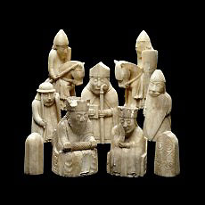
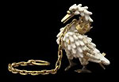
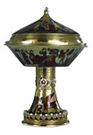
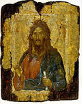
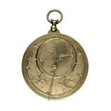

|  | The Medieval Gallery Objects from western Europe and the Byzantine world from the period c.800 - c.1500 (with the exception of some icons from later periods) are arranged in roughly chronological order with cases devoted to Carolingian and Ottonian art, Romanesque and Gothic metalwork and ivory, medieval coinage, medieval jewellery, popular religion, secular life and arms and armour. The displays include examples of panel painting, alabaster carvings, leather work, some tiles (see also room 43) and some scientific instruments (see also room 44).
|
|  |  |  |  |
|
Spectacular Loans-in The Kingston Lacy Screen The All Souls Jewel The Lacock Cup |
More Galleries: 36/7 | 41 | 42 | 43 | 44 | 45 | 46 | 47 | 48 | 49 | 50
world cultures | sitemap | contact us | copyright